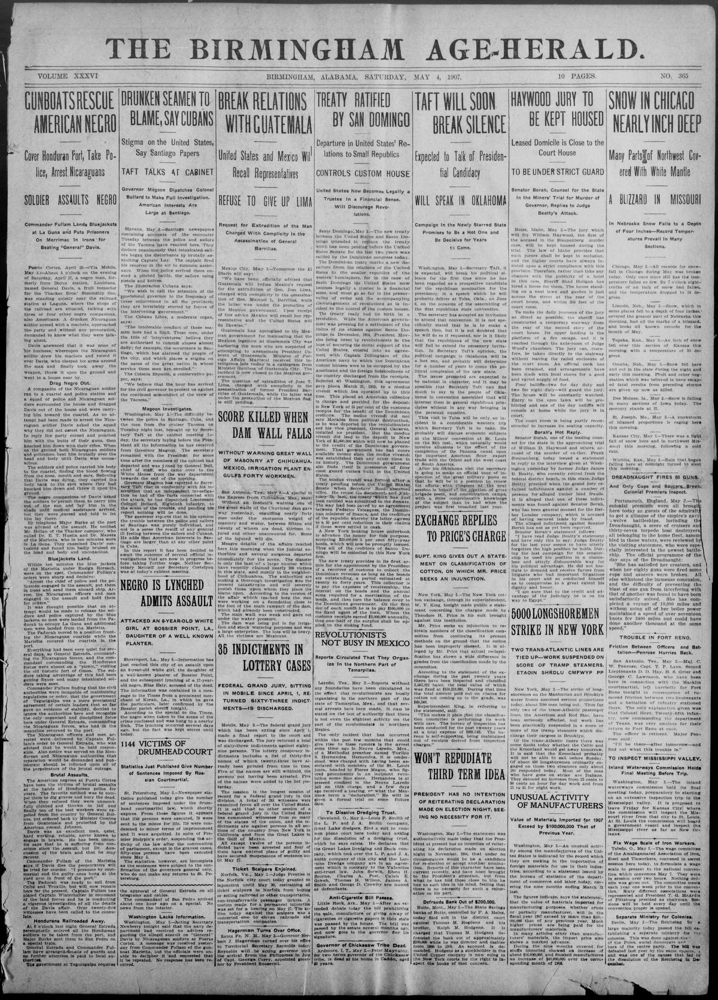

TREATY RATIFIED BY SAN DOMINGO
https://www.loc.gov/resource/sn85038485/1907-05-04/ed-1/?sp=1

See the original pageVer la página original
Departure in United States' Relations to Small Republics
CONTROLS CUSTOM HOUSE
United States Now Becomes Legally a Trustee In a Financial Sense.
Will Discourage Revolutions.
Santo Domingo, May 3.—The new treaty between the United States and Santo Domingo intended to replace the treaty which has been pending before the United States Senate for the last two years was ratified by the Dominican congress today.
The Dominican treaty marks a new departure from the relations of the United States to the smaller republics of the western hemisphere, for in the case of Santo Domingo the United States now becomes legally a trustee in a financial sense, and must go so far in the preservation of order and the accompanying discouragement of revolutions as is incident to the control of the custom house.
The treaty really had its birth in a revolution. While the American government was pressing for a settlement of the claims of its citizens against Santo Domingo in December, 1904, President Morales being beset by revolutionists in the hope of securing the moral support of the United States, entered into an agreement with Captain Dillingham of the American navy by which the Dominican custom houses were to be occupied by the Americans and the foreign indebtedness of the country discharged from the receipts. Rejected at Washington, this agreement gave place March 31, 1905, to a modus vivendi which has operated up to this time. This placed an American collector in charge and provided for the deposit in New York of 55 per cent of the customs receipts for the benefit of the Dominican creditors. The modus vivendi did not save Morales from political destruction, as he was deported by the revolutionists and his vice president, General Caceres, installed as president. But the modus vivendi did lead to the deposit in New York of $3,000,000 which will now be placed to the credit of the Dominican government. That government has had more available money since the modus vivendi was established than any other time in its history. The Dominican government also finds itself in possession of four coast guard cutters built in the United States.
The modus vivendi was formed after a treaty pending before the United States Senate when Secretary Root assumed office. He recast the document, and February 19, last, the treaty which has just been ratified was submitted to the Senate. The way had been paved by an agreement between Federico Velasquez, the Dominican minister of finance, and the creditors of the republic whereby the latter agreed to a 50 per cent reduction in their claims if these were settled in cash.
A New York banking house undertook to advance the money for this purpose, accepting $20,000,000 5 per cent fifty-year bonds, which will now be promptly issued. Thus all of the creditors of Santo Domingo will be embodied in this New York firm.
The new treaty provides in its first article for the appointment by the President of a receiver of customs to collect the Dominican revenues as long as the bonds are outstanding, a period estimated at twenty to forty years. This collector is to pay the expenses of receivership, the interest on the bonds and the annual sums required for a mortization of the bonds, and then turn the balance over to the Dominican government. On the first day of each month he is to pay $100,000 to the fixed agent of the loan. When the customs receipts exceed $3,000,000 annually, then one-half of the surplus shall be applied to the sinking fund.
How to cite this articleCómo citar este artículo
The Birmingham Age-Herald. (1907). Birmingham, Ala., May 4, 19074 de mayo de 1907. DR in the American PressRD en la Prensa Norteamericana. Library of Congress, Chronicling America: https://www.loc.gov/resource/sn85038485/1907-05-04/ed-1/?sp=1
ReferencesReferencias
Library of Congress, Chronicling America: The Birmingham Age-Herald, May 4, 19074 de mayo de 1907.
Send an observationEnviar una observación
Does this article connect with your family, your town, or something you know? Did we get something wrong? Write to us. Observations go to the editor's inbox and are read by a person.¿Este artículo conecta con su familia, su pueblo o algo que usted conoce? ¿Nos equivocamos en algo? Escríbanos. Las observaciones llegan al buzón del editor y las lee una persona.
Send observationEnviar observación